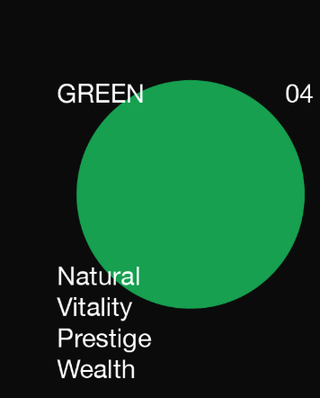

USEFUL
purple demands green
green is the color of nature.
green symbolizes growth, harmony, freshness, and fertility
green has an emotional correspondence with safety and money
Sometimes green denotes lack of experience
Dark green is associated with ambition, greed, and jealousy.
Yellow-green can indicate sickness, cowardice, discord, and jealousy.
Aqua is associated with emotional healing and protection.
Olive green is the traditional color of peace.